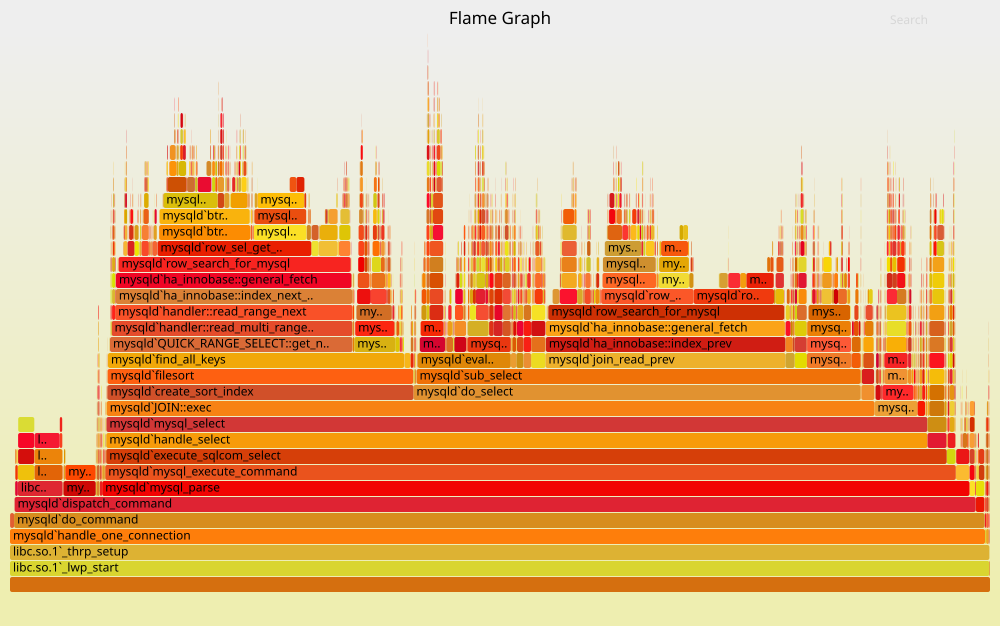

claude 是否存在潜在内部信息泄漏 😊{
"version": 3,
"file": "bundle.js",
"sources": ["src/index.js"],
"names": ["map", "callbackFn"],
"mappings": "AAAA, ...",
"sourcesContent": ["const x = 1; ..."] // 就是这个！
}

再次回到学习 C 语言时 “最简单” 的例子；但当我们有了操作系统的知识以后，我们就可以深入调试其中的每一个细节。从汇编指令到系统调用到，我们可以看到程序和处理器、操作系统的所有交互。
void foo(int n, ...) {
intptr_t *vargs = (intptr_t *)&n;
// vargs[0]
// vargs[1]
// ...
}
I call it my billion-dollar mistake. It was the invention of the null reference in 1965. (Tony Hoare, 1934—2026)
Understanding real program behavior still remains the most important first step in formulating a theory of memory management. Without doing that, we cannot hope to develop the science of memory management; we can only fumble around doing ad hoc engineering, in the too-often-used pejorative sense of the word. At this point, the needs of good science and of good engineering in this area are the same—a deeper qualitative understanding. We must try to discern what is relevant and characterize it; this is necessary before formal techniques can be applied usefully.
Premature optimization is the root of all evil.
——D. E. Knuth
原文：“Tape is Dead, Disk is Tape, Flash is Disk, RAM Locality is King.” (Jim Gray, 2006)
libc 作为屏蔽了几乎所有指令集体系结构和 ABI 的抽象层，里面有许多隐秘的 “角落”，必须用 “机器级” 的 hacking 实现，而不仅仅是系统调用的封装。在 libc 的抽象之上，除了极致性能的场景，我们几乎不再需要任何 “机器相关” 的代码——这个可移植的抽象层最终支撑了世界的应用生态。
在 AI 的帮助下调试 musl libc 中你感兴趣的函数。